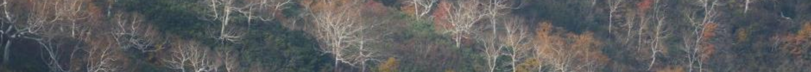

Shinichi Tatsumi


Shinichi Tatsumi, Ph.D. (辰巳晋一)
Senior Researcher, Hokkaido Research Center, FFPRI
community.ecologist at gmail dot com
Welcome to my research website. I am a community ecologist studying changes in biodiversity across space and time. I currently work on numerical methods to disentangle the complexities underlying ecological community structure and ecosystem functioning. I am also interested in applying ecological theory to ecosystem management under global change. I currently serve as an associate editor for Journal of Ecology, Ecological Solutions and Evidence, and Journal of Forest Research.
Publications
Preprints
- Iritani R, Ontiveros VJ, Alonso D, Capitan JA, Godsoe W, Tatsumi S (2022) Jaccard dissimilarity in stochastic community models based on the species-independence assumption. bioRxiv.
Peer-reviewed Articles
2023
- Tatsumi S, Yamaguchi K, Furuya N (2023) ForestScanner: a mobile application for measuring and mapping trees with LiDAR-equipped iPhone and iPad. Methods in Ecology and Evolution. in press.
2022
- Tatsumi S, Iritani R, Cadotte MW (2022) Partitioning the temporal changes in abundance-based beta diversity into loss and gain components. Methods in Ecology and Evolution 13(9): 2042–2048.
2021
Tatsumi S, Iritani R, Cadotte MW (2021) Temporal changes in spatial variation: partitioning the extinction and colonisation components of beta diversity. Ecology Letters 24(5): 1063–1072.
Tatsumi S, Matsuoka S, Fujii S, Makoto K, Osono T, Isbell F, Mori AS (2021) Prolonged impacts of past agriculture and ungulate overabundance on soil fungal communities in restored forests. Environmental DNA 3(5): 930–939.
Suzuki KF, Kobayashi Y, Seidl R, Senf C, Tatsumi S, Koide D, Azuma WA, Higa M, Koyanagi TF, Qian S, Kusano Y, Matsubayashi R, Mori AS (2021) The potential role of an alien tree species in supporting forest restoration: lessons from Shiretoko National Park, Japan. Forest Ecology and Management 493: 119253.
Sookhan N, Lorenzo A, Tatsumi S, Yuen M, MacIvor JS (2021) Linking bacterial diversity to floral identity in the bumble bee pollen basket. Environmental DNA 3(3): 669–680.
2020
Tatsumi S, Strengbom J, Čugunovs M, Kouki J (2020) Partitioning the colonization and extinction components of beta diversity across disturbance gradients. Ecology 101(12): e03183.
Tatsumi S (2020) Tree diversity effects on forest productivity increase through time because of spatial partitioning. Forest Ecosystems 7: 24.
Malloch B, Tatsumi S, Seibold S, Cadotte MW, MacIvor JS (2020) Urbanization and plant invasion alter the structure of litter microarthropod communities. Journal of Animal Ecology 89(11): 2496–2507.
2019
Tatsumi S, Cadotte MW, Mori AS (2019) Individual-based models of community assembly: neighborhood competition drives phylogenetic community structure. Journal of Ecology 107(2): 735–746.
Cadotte MW, Carboni M, Si X, Tatsumi S (2019) Do traits and phylogeny support congruent community diversity patterns and assembly inferences? Journal of Ecology 107(5): 2065–2077.
2018
- Pasanen H, Junninen K, Boberg J, Tatsumi S, Stenlid J, Kouki J (2018) Life after tree death: does restored dead wood host different fungal communities to natural woody substrates? Forest Ecology and Management 409: 863–871.
2017
Tatsumi S, Ohgue T, Azuma A, Tuovinen V, Imada Y, Mori AS, Thor G, Ranlund Å (2017) Tree hollows can affect epiphyte species composition. Ecological Research 32(4): 503–509.
Mori AS, Tatsumi S, Gustafsson L (2017) Landscape properties affect biodiversity response to retention approaches in forestry. Journal of Applied Ecology 54(6): 1627–1637.
2016
Tatsumi S, Owari T, Mori AS (2016) Estimating competition coefficients in tree communities: a hierarchical Bayesian approach to neighborhood analysis. Ecosphere 7(3): e01273.
Nishizawa K, Tatsumi S, Kitagawa R, Mori AS (2016) Deer herbivory affects the functional diversity of forest floor plants via changes in competition-mediated assembly rules. Ecological Research 31(4): 569–578.
Owari T, Okamura K, Fukushi K, Kasahara H, Tatsumi S (2016) Single-tree management for high-value timber species in a cool-temperate mixed forest in northern Japan. IJBSESM 12(1–2): 74–82.
2015
Mori AS, Qian S, Tatsumi S (2015) Academic inequality through the lens of community ecology: a meta-analysis. PeerJ 3: e1457.
Owari T, Tatsumi S, Ning L, Yin M (2015) Height growth of Korean pine seedlings planted under strip-cut larch plantations in northeast China. International Journal of Forestry Research: Art 178681.
2014
Tatsumi S, Owari T, Yin M, Ning L (2014) Neighborhood analysis of underplanted Korean pine demography in larch plantations: implications for uneven-aged management in northeast China. Forest Ecology and Management 322: 10–18.
Tatsumi S, Owari T, Kasahara H, Nakagawa Y (2014) Individual-level analysis of damage to residual trees after single-tree selection harvesting in northern Japanese mixedwood stands. Journal of Forest Research 19(4): 369–378.
2013
- Tatsumi S, Owari T (2013) Modeling the effects of individual-tree size, distance, and species on understory vegetation based on neighborhood analysis. Canadian Journal of Forest Research 43(11): 1006–1014.
2010
- Suzuki S, Tatsumi S, Ueno Y (2010) Multiple-criteria decision-support system for optimising spatial distribution in a forest classification process. Journal of Forest Planning 16(1): 17–26.
Books

辰巳晋一（2021）「垂直（階層）構造」. 日本森林学会（編）. 森林学の百科事典. 丸善出版. 42–43頁.
Marc Kéry・J. Andrew Royle（著）, 深谷肇一・飯島勇人・伊東宏樹（監訳）, 飯島勇人・伊東宏樹・奥田武弘・長田穣・川森愛・柴田泰宙・高木俊・辰巳晋一・仁科一哉・深澤圭太・深谷肇一・正木隆（訳）（2021）生態学のための階層モデリング ―RとBUGSによる分布・個体数量・種の豊かさの統計解析―. 共立出版.
Mark Vellend（著）, 松岡俊将・辰巳晋一・北川涼・門脇浩明（訳）（2019）生物群集の理論 ―4つのルールで読み解く生物多様性―. 共立出版.
Other Publications
辰巳晋一（2021）多種混植による森林生産性の向上. 北の森だより 27: 2–3.
辰巳晋一（2021）摩天楼と緑の街、トロント. 北方林業 72(3): 25–27.
石橋聡、古家直行、辰巳晋一（2019）北見地方天然林における洞爺丸台風風倒後の長期林分動態. 北方森林研究 67: 61–62.
橋本徹、伊藤江利子、梅村光俊、古家直行、辰巳晋一、石橋聡（2019）筋状地掻きで更新したダケカンバの立木位置と微地形の関係. 北方森林研究 67: 53–56.
辰巳晋一（2019）ササ密度は中径針葉樹の下で薄い. 北方林業 70(1): 32–35.
辰巳晋一（2016）単木情報を使った統計モデリング. 森林計画学会誌 50(1): 51–53.
辰巳晋一（2015）カラマツ林に樹下植栽されたチョウセンゴヨウの動態モデリング：中国東北部における二段林施業に向けて. 広嶋卓也・吉本敦 編. 「森林計画・計測における統計理論の応用に係わる若手研究集会」資料集. pp. 10–12. (ISBN 978-4-915870-45-3)
尾張敏章、江口由典、宅間隆二、岡村行治、福岡哲、木村徳志、辰巳晋一（2015）択伐天然林の更新を補助するための精密植栽技術の開発 (予報). 北方森林研究 63: 81–84.
Owari T, Tatsumi S, Ning L, Yin M (2014) Height growth of Korean pine saplings planted under strip-cut larch plantations in northeast China. The International Forestry Review 16(5): 366–367.
Owari T, Okamura K, Fukushi K, Kasahara H, Tatsumi S (2014) Single-tree management for high-value timber species in a mixed conifer-hardwood forest in northern Japan. The International Forestry Review 16(5): 144.
Tatsumi S, Owari T, Ohkawa A, Nakagawa Y (2013) Bayesian modeling of neighborhood competition in uneven-aged mixed-species stands. Formath 12: 191–209.
Tatsumi S, Owari T, Toyama K, Shiraishi N (2012) Adaptation of a spatially-explicit individual-based forest dynamics model SORTIE-ND to conifer-broadleaved mixed stands in the University of Tokyo Hokkaido Forest. Formath 11: 1–26.
尾張敏章、福士憲司、広川俊英、井上崇、江口由典、辰巳晋一、美濃羽靖、中島徹（2012）林分施業法の選木技術：ウダイカンバ二次林の事例. 北方森林研究 60: 77–80.
Tatsumi S, Owari T, Yamamoto H, Shiraishi N (2010) Forty-two years of stand structure development in a natural sub-boreal forest under selection system in central Hokkaido, Japan. The International Forestry Review 12(5): 87.
辰巳晋一、尾張敏章、山本博一、白石則彦（2010）混交林択伐施業による42年間の林分構造の変化：東京大学北海道演習林の事例. 関東森林研究 61: 53–56.
CV
Research Positions
- 2020–present: Senior Researcher, Hokkaido Research Center, FFPRI
- 2019–2021: JSPS Overseas Research Fellow, University of Toronto (Marc Cadotte lab)
- 2018–2020: Researcher, Hokkaido Research Center, FFPRI
- 2017–2018: Visiting Researcher, University of Toronto (Marc Cadotte lab)
- 2016: Visiting Researcher, University of Eastern Finland (Jari Kouki lab)
- 2015–2018: JSPS Research Fellow PD, Yokohama National University (Akira Mori lab)
- 2014–2015: Technical Assistant, Yokohama National University
- 2012–2014: JSPS Research Fellow DC2, University of Tokyo (University of Tokyo Forests)
Education
- 2011–2014: PhD, University of Tokyo
- 2009–2011: MSc, University of Tokyo
- 2005–2009: BSc, Tokyo University of Agriculture and Technology
Grants and Fellowships
- 2022–2023: Commissioned Research, Forestry Agency (Hosoda K, Tatsumi S, et al.)
- 2021–2025: JSPS Grant-in-Aid for Young Scientists (Tatsumi S)
- 2021–2022: Funded Research, the Smart Forestry EZO Model (Furuya N & Tatsumi S)
- 2019–2021: JSPS Overseas Research Fellowship (Tatsumi S)
- 2018–2021: Swedish Research Council Grant (Low M, Gårdmark A, Ecke F & Tatsumi S)
- 2016–2019: JSPS Grant-in-Aid for Young Scientists B (Tatsumi S)
- 2016–2017: Pro Natura Fund Grant (Mori A, Tatsumi S & Nishizawa K)
- 2016–2016: Scandinavia-Japan Sasakawa Foundation Grant (Tatsumi S & Gustafsson L)
- 2015–2018: Grant-in-Aid for JSPS Fellows (Tatsumi S)
- 2014–2015: KWEF Research Grant (Owari T & Tatsumi S)
- 2012–2014: Grant-in-Aid for JSPS Fellows (Tatsumi S)
- 2012–2013: AGS Research Grant (Owari T, Tatsumi S & Yin M)
- 2011–2012: Sasakawa Scientific Research Grant (Tatsumi S)
Awards
- 2020: Postdoc Paper of the Year 2019, Department of Biological Sciences, University of Toronto Scarborough
- 2018: Best English Presentation Award, Ecological Society of Japan
- 2018: Ecological Research Paper Award 2017, Ecological Society of Japan
- 2016: Kuroiwa Prize, Japan Society of Forest Planning
- 2014: Dean’s Award for Academic Excellence (Ph.D.), Department of Agricultural and Life Sciences, University of Tokyo
- 2014: Excellent Poster Award, Ecological Society of Japan
- 2014: Incentive Award for Young Researchers, ESJ Hokkaido Branch
- 2013: Student Poster Award, Japan Forest Society
- 2012: Student Poster Award, Japan Forest Society
- 2012: Sasakawa Scientific Research Award, Japan Science Society
Academic Services
- 2023–present: Associate Editor, Journal of Ecology
- 2023–present: Representative director of Hokkaido region, Japan Society of Forest Planning
- 2022–present: Editorial Board, Journal of Forest Research
- 2020–present: Associate Editor, Ecological Solutions and Evidence
- 2020–2023: Committee member, English Session, Ecological Society of Japan
- 2011–2012: Committee member, Master-theses Conference, ESJ Kanto
Manuscript Review
Annals of Forest Science, Biological Conservation, Biological Invasions, Biological Reviews, Canadian Journal of Forest Research (2), Conservation Science and Practice (4), Diversity and Distributions, Ecography (3), Ecological Processes, Ecological Research (2), Ecology (3), Ecology and Evolution, Ecology Letters (2), Ecosphere, Forest Ecology and Management (3), Forestry Chronicle, Forests (4), Frontiers in Plant Science, Functional Ecology, Global Ecology and Biogeography, Journal of Animal Ecology, Journal of Applied Ecology (3), Journal of Biogeography (2), Journal of Ecology, Journal of Forest Research (2), Journal of Mountain Science, Journal of Sustainable Forestry, Journal of Vegetation Science (5), Landscape and Ecological Engineering, Methods in Ecology and Evolution, Oecologia (3), Plos One, Population Ecology, Scientific Data, Scientific Reports (2), Swiss National Science Foundation, Trees Structure and Function, 森林計画学会誌 (2), 北方森林研究
Review-publication ratio: 5.5 (= 66 manuscripts reviewed / 12 first-author papers)
履歴書
- Research Mapはこちら
職歴
- 2020–現在: 国立研究開発法人 森林総合研究所 北海道支所 主任研究員
- 2019–2021: トロント大学 生物科学研究科 JSPS海外特別研究員
- 2018–2020: 国立研究開発法人 森林総合研究所 北海道支所 研究員
- 2017–2018: トロント大学 生物科学研究科 訪問研究員
- 2016: 東フィンランド大学 森林科学科 訪問研究員
- 2015–2018: 横浜国立大学大学院 環境情報研究院 JSPS特別研究員 PD
- 2014–2015: 横浜国立大学大学院 環境情報研究院 技術補佐員
- 2012–2014: 東京大学大学院 農学生命科学研究科 JSPS特別研究員 DC2
学歴
- 2011–2014: 東京大学大学院 農学生命科学研究科 森林科学専攻 博士課程
- 2009–2011: 東京大学大学院 農学生命科学研究科 森林科学専攻 修士課程
- 2005–2009: 東京農工大学 農学部 地域生態システム学科
研究助成
- 2022–2023: 林野庁 調査委託事業（分担）
- 2021–2025: JSPS 科学研究費基金 若手研究（個人）
- 2021–2022: スマート林業EZOモデル構築協議会 受託研究（分担）
- 2019–2021: JSPS 海外特別研究員（個人）
- 2018–2021: スウェーデン科学評議会 Vetenskapsrådet 研究費（分担）
- 2016–2019: JSPS 科学研究費基金 若手研究B（個人）
- 2016–2017: プロ・ナトゥーラ・ファンド国内研究助成 （分担）
- 2016–2016: スカンジナビア・ニッポン ササカワ財団研究助成（代表）
- 2015–2018: JSPS 科学研究費補助金 特別研究員奨励費 PD（個人）
- 2014–2015: クリタ水・環境科学振興財団 研究助成（分担）
- 2012–2014: JSPS 科学研究費補助金 特別研究員奨励費 DC2（個人）
- 2012–2013: 東京大学 AGS研究助成（分担）
- 2011–2012: 日本科学協会 笹川科学研究助成（個人）
賞罰
- 2020: トロント大学 生物科学研究科 Postdoc Paper of the Year 2019
- 2018: 第65回 日本生態学会 Best English Presentation Award
- 2018: 日本生態学会 Ecological Research Paper Award 2017
- 2016: 2015年度 森林計画学会 黒岩菊郎記念研究奨励賞
- 2014: 2013年度 東京大学大学院 農学生命科学研究科 研究科長賞（博士）
- 2014: 第61回 日本生態学会 優秀ポスター賞
- 2014: 2013年度 日本生態学会 北海道地区会 若手研究奨励賞
- 2013: 第124回 日本森林学会 学生ポスター賞
- 2012: 第123回 日本森林学会 学生ポスター賞
- 2012: 平成23年度 日本科学協会 笹川科学研究奨励賞
委員
- 2023-現在: Journal of Ecology 編集委員
- 2023-現在: 森林計画学会 北海道地区代表理事
- 2022-現在: Journal of Forest Research 編集委員
- 2020-現在: Ecological Solutions and Evidence 編集委員
- 2020–2023: 日本生態学会 英語発表部会委員（21年度 副部会長, 22年度 部会長）
- 2011–2012: 第32回 関東生態学関係修論発表会委員